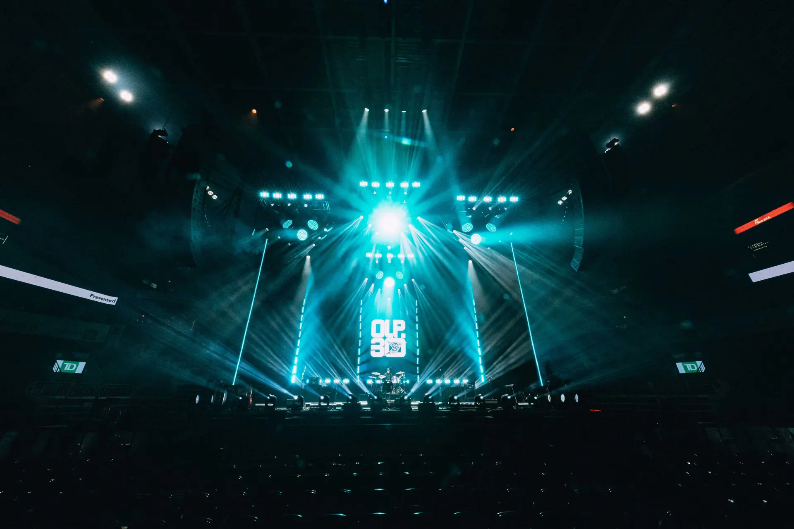

← All work Photo: Corey Kelly, Brandon Ferguson
2025
OLP30
- Taylor Green
- Video Director + Media Server Programmer
- Production design
- Mike Herkimer
- Lighting design
- Mike Herkimer
- Screens / content design
- Mike Herkimer
- Lighting direction
- Mike Herkimer
- Lighting programming
- Mike Herkimer
- Media server programming
- Mike Herkimer, Taylor Green
- Photography
- Corey Kelly, Brandon Ferguson
Gallery01 / 08